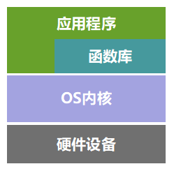

Python项目如何合理组织规避import天坑
本文共3500余字，预计阅读时间12分钟，本文同步发布于知乎（账号silaoA）和微信公众号平台（账号伪码人）。
关注学习了解更多的Cygwin、Linux、Python等技术。
Python程序代码中经常需要import语句，从而调用已有的函数、方法等，但在多目录、多文件的项目程序中，容易遇到各种import错误，本文将通过合理化组织规避import带来的错误。本文描述针对Python3，Python2已过时并将进入无人维护状态，如是初学者建议直接选Python3。
0x00 module与package
代码复用性和分层思想
程序代码如果完成的功能比较简单，放在一个文件里比较正常。如果随着需求变多，要完成的功能越来越多样化，那么正常的做法都是按照功能模块做好设计，将程序代码分割成多个目录、文件组织，每个文件完成各自的那部分功能即可。这样做的好处，一方面是便于维护，一旦发现bug方便快速定位和调试；另一方面是可以提高代码复用性，比如最基础、最常用的那部分代码文件，还可以被其他项目所用，不必从零开始重写。
还没见过哪种编程语言不支持多文件程序设计（如果真有，那也该淘汰了），Python也不例外。
既然支持多文件组织程序了，那么如何组织就是个大学问。在Cygwin系列（九）：Cygwin学习路线文中也提到了计算机系统粗略层次划分，在应用程序层面也可以照此继续细分更多层。

照这个思路，可以简单地把程序再分为驱动和应用层，驱动负责实现基本操作、屏蔽细节，也可以叫底层；应用层根据驱动提供的接口调用相关函数，实现更高级的功能，也可以叫上层。比如Python中len、sum等函数，我们不用关心它是怎么实现的，也不需要重写求长度、求和的函数，自己写的程序代码只要按照接口规定传入参数即可得到预期结果，从而实现更高级的功能需求，那么提供len、sum等函数的代码文件就称为底层，我们自己写的代码可称为上层。更进一步地，我们自己写的代码可以划分更多层次出来，不难理解,底层与上层是相对而言的。
把编程比作建大楼，层次可以划分为 水泥沙子制作、砖头制作、墙体制作、楼房制作 4层，楼房制作层直接取用墙体搭建房子，必要时可以取用砖头，墙体制作层直接取用砖头形成各式各样的墙体，砖头制作层直接取用水泥沙子形成不同规格的砖头，而水泥沙子一般是有做好的。并且到了某次需要建大桥的时候，水泥沙子制作、砖头制作这些功能可以再用，不必重新实现，减少了工作量。
module
在Python中，一个.py文件就是一个module，即“模块”，模块的名称是文件名去掉末尾的’.py’。一个模块（A）中的变量、函数、类等符号，被其他模块（B）import之后，可被其他模块（B）引用。我们写程序代码的时候，就可以把代码分门别类地放在不同的.py文件中，按照各自的层级位置，实现各自的功能。
比如将程序分成brick.py、wall.py、house.py。
brick.py实现砖头制作函数，不同的参数指定砖头规格；wall.py中import brick，调用函数得到不同规格砖头，组装形成墙体；house.py是主程序，import wall后调用函数得到墙体，必要时也可以import brick制作特定的砖头，最后统一组装成房子。
Python是“电池内置”型（battery included）语言，初次安装Python解释器时会一并安装很多基础的模块和包，称为“标准库（standard library）”，在Python安装路径的lib子目录下可看到。此外，用户可以自行安装其他第三方库，默认会放在lib/site-packages子目录下。
有的模块出于运行效率考虑，是被编译进Python解释器的，并不以.py文件形式存在，比如常用的builtins、sys等。内置的len()函数、加减乘除运算等就在builtins模块中，使用时甚至不需要我们import，Python解释器在启动时便已import好了，而sys模块需要先import才能使用。
package
自己写的模块应该避免与Python内置模块重名，但不同人编写的模块名称相同怎么办？为解决名称冲突问题，Python引入按照目录组织模块的方法，创造了package（包）的概念。包是一个特殊的目录，其下必须含有名为__init__.py的文件，否则Python会将其当作普通目录而不是包，目录下__init__.py文件对应的模块名就是包（目录）名，文件内容可以为空。
有了包，只要顶层包名称与其他人不发生冲突，模块名称便不会冲突。如下目录组织，顶层包为soud目录，import成功后，相应模块名称为sound.example、sound.formats.wavread、sound.effects.echo、sound.filters.vocoder等，要引用模块中的变量、函数符号，按照模块名.符号名方式使用即可。1
2
3
4
5
6
7
8
9
10
11
12
13
14
15
16
17
18
19
20sound/ # 顶层包
__init__.py # 初始化sound包
formats/ # 子包formats
__init__.py
wavread.py
wavwrite.py
...
effects/ # 子包effects
__init__.py
echo.py
surround.py
reverse.py
...
filters/ # 子包filters
__init__.py
equalizer.py
vocoder.py
karaoke.py
...
example.py
0x01 import
基本形式
import语句支持两种形式：
- import xx
xx是模块名（指含包路径的模块全名）的话，通过xx.符号的形式访问函数、变量、类。xx仅是包名的话，只会import到包下子模块，并不会自动import子包，可以通过xx.mod1.符号的形式访问函数、变量、类，通常会在包下的__init__.py中写入import子包语句，这样便能通过xx.subpack1.mod2.符号形式访问mod2中的函数、变量、类，还有更多技巧进一步简化访问子包下模块内的符号。xx不能定位到任何函数、变量、类名。
- from xx import yy
xx是模块名（指含包路径的模块全名）的话，yy就定位到具体的函数、变量、类。xx是包名的话，yy可以定位到子包、模块或具体的函数、变量、类，比如from sound import __version__，Python解释器首先检测__version__是否为sound/__init__.py中定义的符号，若不是，再检测是否存在sound.__version__模块，如不存在便报错。如果yy是*，那么代表引入xx模块中定义的所有符号；对于包，可以在包下__init__.py文件定义__all__变量规定允许导出的所有符号或模块，如无__all__定义，则该语句只负责importxx包，执行包下__init__.py文件，当然文件内可以import子模块或子包。from xx import *形式容易造成命名冲突，建议慎用！以上两种形式，可以后续加
as表达式，对import的对象取别名，如import numpy as np。
equalizer.py、vocoder.py文件在同级目录下，equalizer.py中使用import vocoder或者from vocoder import xx,然后运行python sound/filters/equalizer.py是不会报ImportError错误的。那么，不在同级目录下该怎么处理呢？
relative import和absolute import
简单来说，相对导入（relative import）的语句通过使用.或..等相对路径的方式来定位要import的模块/包，基准路径是当前模块所在包，如在sound/effects/reverse.py中，基准路径是sound.effects包，使用下属语句都是合法的。1
2
3
4
5from . import echo # 对应模块 ./echo.py
from .surround import XXX # 对应模块 ./surround.py内的XXX符号
from .. import formats # 对应包 ../formats
from ..filters import equalizer # 对应模块 ..filters/equalizer.py
from ... import example # 对应模块 ../../example.py
但在执行python sound/effects/reverse.py时便会报ModuleNotFoundError错误，这是因为执行语句将sound/effects/reverse.py当做主模块（main module），主模块的名称在运行时会被Python强制命名为__main__，从而找不到__main__.echo模块，规避的正确方式是使用-m选项运行指定模块，即python -m sound.effects.reverse运行正常。相对导入方式可以解决导入当前目录、上级目录、上上级目录下模块的需求，但使用相对导入的文件不能直接以脚本方式运行，只能以模块方式（-m选项）运行，并且当前路径要处于import语句定位的路径或更高层路径。
绝对导入（absolute import）与上相反，不使用.或..定位要import的模块/包的路径，而使用完整路径定位模块/包，Python根据sys.path的值逐路径搜索要导入的模块/包，而对于内置的和安装第三方的模块/包，其路径都在sys.path值中。绝对导入的方式无法导入上级目录的模块，虽然可以通过在程序中改写sys.path追加特定路径的方式规避，但不推荐，会增加风险；使用绝对导入的文档，应使用脚本方式直接运行。
0x02 项目组织建议
为提高代码复用和有效模块化组织，建议使用主程序+包的方式组织项目，其中包内按分层思想放置若干模块，包内模块间使用相对导入（relative import），项目根目录下放置主程序文件。仍以开头建大楼为例，组织如下：1
2
3
4
5
6
7
8
9
10
11
12
13
14
15
16projectname/ # 项目目录
#__init__.py # 也可以变成包，供今后其他项目import
construct/ # 子包construct用于建造过程
__init__.py
brick.py # 制作砖头
wall.py # 制作墙体
misc.py # 其他不好归类的功能
...
decoration/ # 子包decoration用于装修装饰过程
__init__.py
room.py # 放间装修装饰
clean.py # 清洁
...
doc/ # 项目文档目录
buildhouse.py # 项目主程序，如果较复杂应继续分拆
README.md # 项目简介
- 在
construct包下，对brick模块都使用from .brick import (XX, YY, ZZ)的形式，明确要import的变量、函数、类名称； - 同时，在
__init__.py中使用from .brick import (XX, YY, ZZ)、from .wall import (AA, BB, CC)等把这些可以对外导出的符号import一遍，这样construct包被construct包下模块或主程序buildhouse.py导入时，可以简化为from ..construct import (XX, CC)、from construct import (AA, BB, CC, XX, YY, ZZ)或import construct。 - 尽可能地减少在import语句使用 “*“ 符号，实在无法避免时，为限制 “*“ 符号带来的命名冲突，在
construct/__init__.py、decoration/__init__.py文件中，定义__all__变量，明确限定允许被导出的所有符号。 - 主程序运行时，先切换到
projectname目录下，再执行python buildhouse.py，或者直接python path/to/projectname/buildhouse.py
若项目进一步复杂，一方面可能增加更多的包，另一方面在包目录之下可以增加子包，使层次更加清晰明了。
参考
- Python的import陷阱
- Python 3.6.7 Documentation - The Python Tutorial.
更多阅读
- Cygwin前传：从割据到互补
- Cygwin系列（一）：Cygwin是什么
- Cygwin系列（九）：Cygwin学习路线
- Linux Cygwin知识库（一）：一文搞清控制台、终端、shell概念
- Linux Cygwin知识库（二）：目录、文件及基本操作
如本文对你有帮助，或内容引起极度舒适，欢迎分享转发或点击下方捐赠按钮打赏 ^_^
- 本文链接：https://silaoa.github.io/2019/2019-08-15-Python项目如何合理组织规避import天坑.html
- 版权声明：本文为原创文章，如需转载，请联系stsilaoa@gmail.com 或 公众号 伪码人 或知乎私信 silaoA。